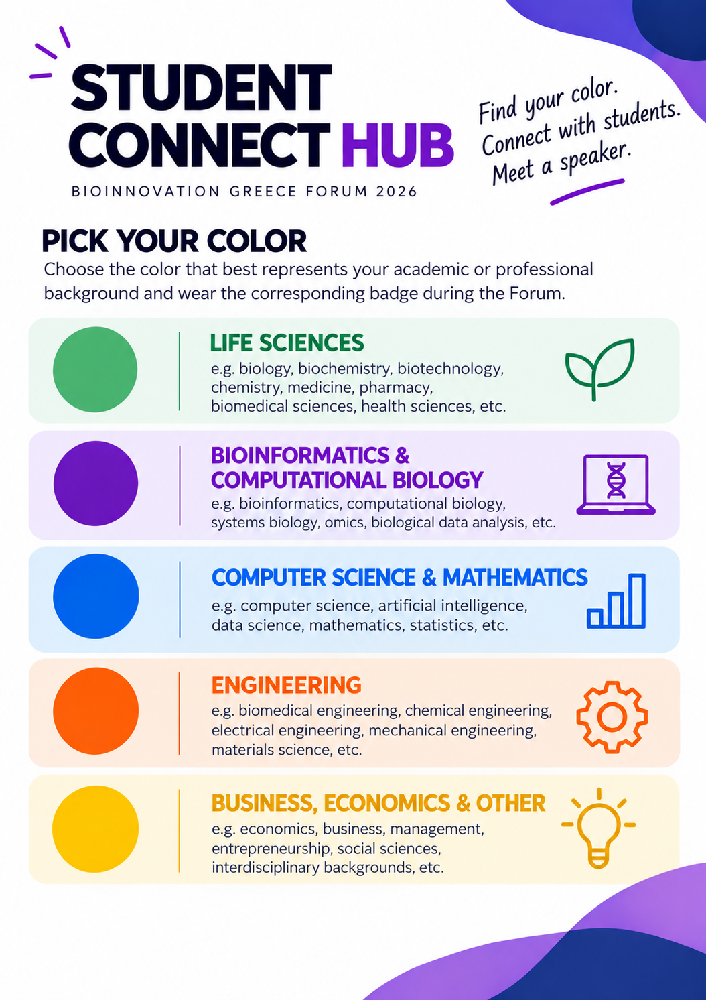

Want an easy way to meet other students and speakers who are interested in connecting with people from your background? Say hello to Color Connect, a new Student Connect Hub activity designed to make networking feel a little less awkward and a lot more fun.
Friday 03/10, 15:30–16:00 — Coffee Break 3, Coffee Break Area.
How it works
- Collect your badge. Pick up a color badge from Reception based on your academic or professional background.
- Find your color. During Coffee Break 3, look for other students wearing the same color and gather together.
- We'll make the introduction. A Student Connect volunteer will bring your group a participating speaker wearing your color — someone who's specifically interested in meeting students from your background.
- Join a mini speaker Q&A. Ask questions, exchange ideas, and have a short, informal conversation with the speaker and your group.
Find your color, meet your people, and start a conversation. See who's taking part over on our Network page.